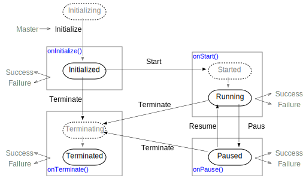
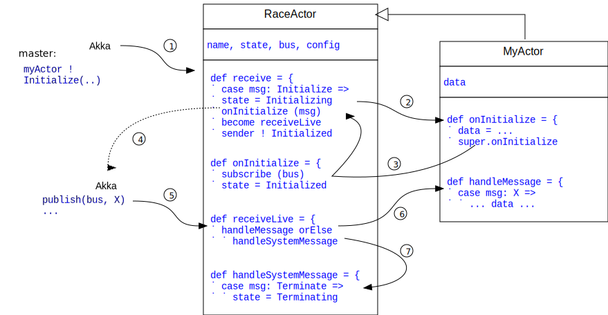

RaceActors
RaceActors are specialized Akka actors that primarily implement three RACE specific aspects:
- a RACE specific state model
- initialization through external configuration data
- communication through network-enabled publish/subscribe channels
The RACE distribution includes a number of ready-to-use RaceActors, but in general RaceActors are the major extension axis of RACE. To that end, special care is taken to minimize the system overhead in concrete RaceActor classes, and to separate processing of system messages from actor specific messages.
State Model
Based on the RACE runtime phases, RaceActors implement the following state model

All state transitions are triggered by system messages (e.g. InitializeRaceActor) that are sent
by the master actor. Transition response is a message indicating either success (e.g.
RaceActorInitialized) or failure (e.g. RaceActorInitializeFailed). All state related
system messages are sent point-to-point between the master and the respective RaceActor, and
are processed synchronously by the master actor. Dotted states are automatically entered.
Initializing - automatically set during RaceActor creation.
Initialized - actor has completed its dynamic initialization, i.e. has returned from its
onInitializeRaceActor() method. This is triggered by a InitializeRaceActor message from the
master actor.
Started - actor has received a StartRaceActor message from the master actor.
Running - actor has successfully returned from its onStartRaceActor() method.
Paused - actor has successfully returned from its onPauseRaceActor() method, which is called
automatically when receiving a PauseRaceActor message from the master actor.
Terminating - actor has received a TerminateRaceActor message from the master actor.
Terminated - actor has returned successfully from its onTerminateRaceActor() method. This
marks the end of a RaceActor lifecycle.
Creation and Initialization
RaceActors are created by the master actor by means of normal Akka APIs, providing a TypesafeConfig object as the sole constructor argument:
val actorConfig: Config = ..
val actorRef = context.actorOf( Props(actorCls, actorConfig), actorName)The config object is normally straight from the RACE Runtime Configuration, but includes only the config element for the particular RaceActor to initialize. The constructor uses this config argument to initialize own and mixin (supertype) fields, e.g.:
import gov.nasa.race.core.PublishingRaceActor
...
class AircraftModel (val config: Config) extends PublishingRaceActor {
val id = config.getString("id")
...Existence of a concrete config field is enforced in the RACE provided traits, such as:
package gov.nasa.race.core
import akka.actor.Actor
trait RaceActor extends Actor ... {
val config: Config
...
}
...
trait PublishingRaceActor extends RaceActor {
.. readFrom ++= actorConf.getOptionalStringList("read-from") ..RaceActor constructors only perform the first (local) initialization step. The second step takes
place after all actors have been constructed, upon receiving a InitializeRaceActor message from
the master actor. In response, the system automatically calls a onInitializeRaceActor(..
actorConfig) method that can be overridden by concrete RaceActor classes. For strictly local
RaceActors the config object is the same that was passed into the constructor. For remote
RaceActors, this is the remote configuration for this particular actor.
If concrete RaceActor classes rely on functionality of mixed in system RaceActor traits, they should call the respective super method:
class AircraftModel .. extends PublishingRaceActor { ...
override def onInitializeRaceActor(rc: RaceContext, actorConf: Config) = {
// ..perform specific initialization..
super.onInitializeRaceActor(rc,actorConf) // perform system initialization
...Separation of System and User Message Processing
Development of new RaceActors is the primary approach to extend RACE. Consequently, such new RaceActor classes should only have to provide application specifics, and leave general system processing to mixin system types.
To achieve this goal, concrete actors have to mix in the gov.nasa.race.core.RaceActor trait,
which basically maps system messages to methods that can - but do not have to - be overridden by
concrete RaceActor classes. These callback methods follow the same naming pattern, which is
derived from the respective system message (e.g. StartRaceActor -> onStartRaceActor()).
The standard Akka Actor receive() method should not be overridden, as it holds the processing
that has to happen regardless of concrete RaceActor system callback implementation. Moreover, the
RaceActor trait actually swaps this message handler once the Initialized state for this
actor is reached, which will install a overridable handleMessage() as the primary message
handler for user messages. This is the method concrete RaceActors should provide to process
application specific messages.

The rationale for this dynamic runtime behavior change is that concrete actor fields might get their
initial values from InitializeRaceActor configuration data, and hence should not be referenced
from message handlers before the Initialized state is reached.
Publish/Subscribe
Although RaceActors can use normal Akka point-to-point messaging (e.g. for system messages), the
normal data communication between RaceActors is done through a network-enabled publish/subscribe
mechanism, which utilizes a RACE specific Bus object that is provided by the master during
RaceActor initialization. This bus holds logical channels which are identified by means of
path-like strings such as /flights/positions. The messages published to such channels are
wrapped into BusEvent objects that hold the payload message, the sender (actorRef) and the
respective channel this message was published to.
Publishers get the data channels to publish to from the actor configuration, and use a publish()
method provided by the PublishingRaceActor trait in order to write to such channels:
//--- RACE configuration: myuniverse.conf
... actors [ ...
{ name = ..
class = "myactors.AircraftModel"
write-to = "/flights/positions"
...
//--- actor implementation: AircraftModel.scala
import gov.nasa.race.core.PublishingRaceActor
class AircraftModel (val conf: Config) extends PublishingRaceActor {
val writeTo = conf.getString("write-to")
...
publish( writeTo, new FlightPosition(...))
...Conversely, subscribers mix in the system trait SubscribingRaceActor (which automatically
subscribes to configured channels during actor initialization), and pattern match for respective
BusEvents in their message handlers:
//--- RACE configuration: myuniverse.conf
... actors [ ...
{ .. class = "myactors.FlightProbe"
read-from = "/flights/positions"
...
//--- actor implementation: FlightProbe.scala
import gov.nasa.race.core.SubscribingRaceActor
class FlightProbe (val conf: Config) extends SubscribingRaceActor {
...
override def handleMessage = { ...
case BusEvent(channel, msg: FlightPosition, sender) => ...
...Normally, subscribers only match on payload types (e.g. FlightPosition), channel (selector
string) and sender (actorRef) are usually ignored.
Channels do not have to be defined separately in the configuration, they are merely selectors
used at runtime. This allows to subscribe to a whole tree of sub-channels by using wildcards (e.g.
/flights/*).
Channel names that start with /local/ will only use the bus of the RACE process that executes
the respective actor. Messages published to such channels will not be sent to other RACE instances.
Channels are not type constrained with respect to payload messages. Channel subscribers are responsible for extraction of relevant payload messages, for which Scala's pattern matching is a very convenient and type safe mechanism.